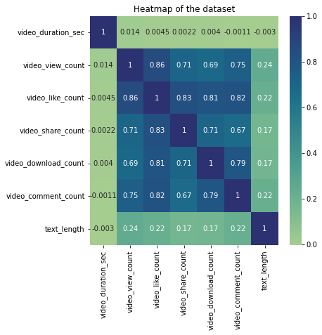
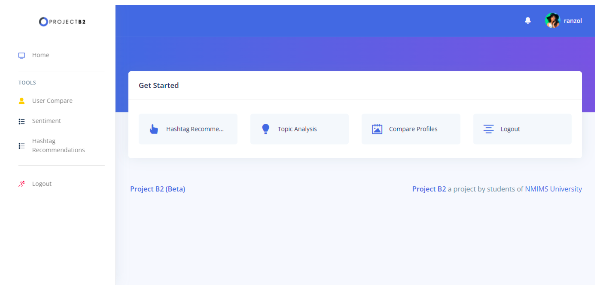
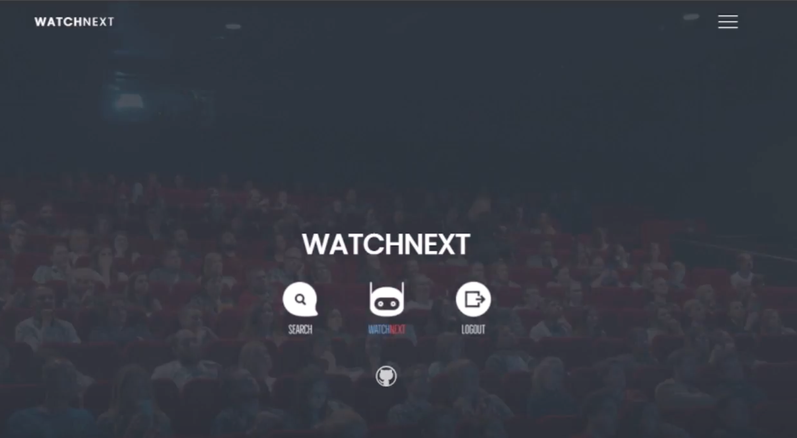
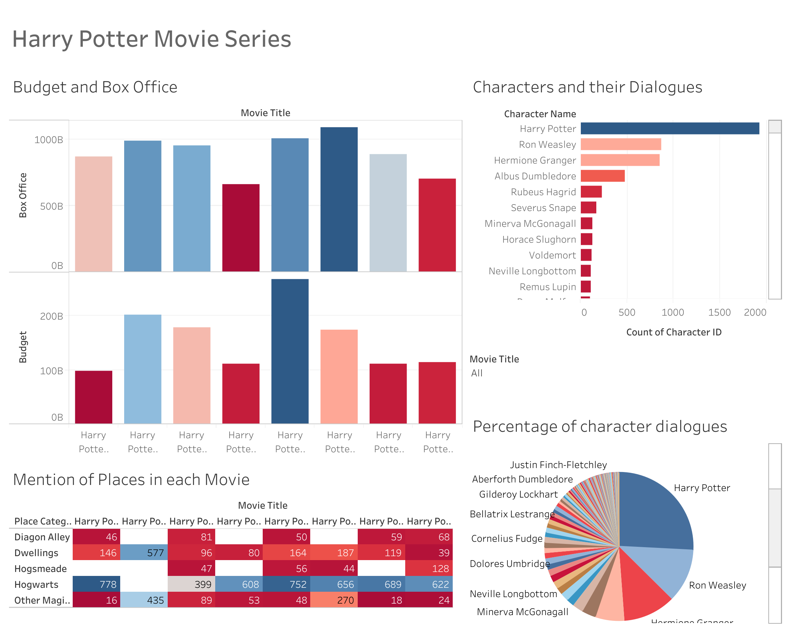
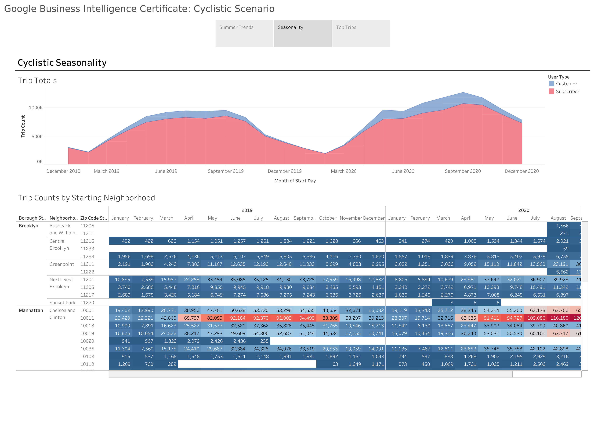

NLP
Extracting insights from language, connecting human communication and data understanding.
Extracting insights from language, connecting human communication and data understanding.
Crafting stories through visual data, turning numbers into compelling narratives.
Unveiling insights with machine learning algorithms from complex data patterns.
Handling vast data, developing scalable strategies for actionable insights.

Created an end-to-end data pipeline for New York TLC dataset, and the creation of a Tableau dashboard, empowering stakeholders with actionable insights for enhancing transportation services and efficiency.

Conducted a comprehensive end-to-end analysis of TikTok data, addressing business challenges through data cleaning, exploratory analysis, hypothesis testing, machine learning modeling, and actionable recommendations for strategic decision-making.

Engineered an Social Media Analytics platform, featuring an interactive dashboard enriched with data visualization tools. Employed advanced techniques, including fuzzy logic and machine learning, for influential scoring, topic analysis, and tweet summarization, empowering users to extract actionable insights from social media data.

Created a dynamic movie recommendation web application that leverages collaborative filtering and content-based algorithms, providing users with personalized movie suggestions for an enhanced viewing experience.

An immersive Harry Potter dashboard project, unlocking captivating insights and enchanting data trends within the wizarding world.

Gained expertise in BI roles, data modeling, ETL processes, data visualization, and dashboard design to deliver actionable insights and enhance decision-making within organizations.